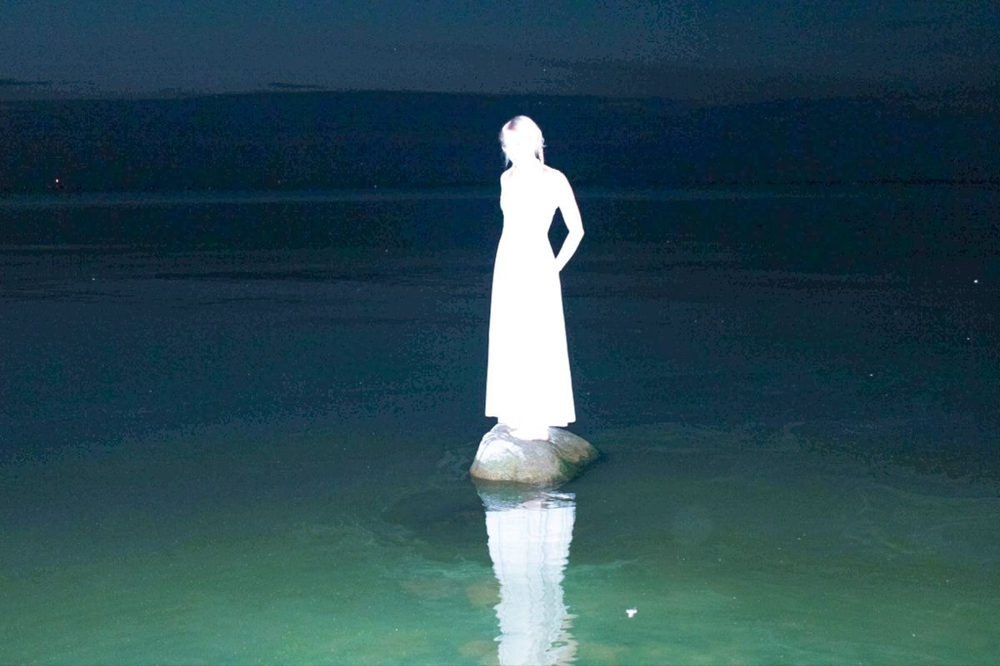

being authentic is never cringe. it doesn’t matter what people say or think about what you do or how you do it; the thing is: if you’re willing to put consistency + effort into building something that is unique (and believe me, it’s possible to do it) of yours, you’ve already won. maybe your methodology is a mess - and at the same time it is beautiful - and it’s totally different from everything you’ve seen or heard; that is when you know you’re on the right path, because maybe (just maybe) you’re not supposed to go through the same route as everyone else.
that occurred to me when it comes to hunting bugs; i’d feel so overwhelmed trying to follow the steps that everyone taught us to take. it’s definitely better when you get tired of putting effort into building your own processes, and sometimes it’s just so much easier and it flows so effortlessly and naturally. that is when you find bugs - it’s so rewarding, more than any amount of money. and when you feel like you’re getting there, don’t forget to please yourself - even if it sounds silly or cringe, it doesn’t f matter - there’s an infinite amount of people ready to criticize your work, but just a few recognize the authenticity that comes from bleeding while you’re building. so always, be the first to emphasize how great you are, and walk away from anyone that is jealous or that says anything that puts you down regarding the hard work you’ve done.